(Jakarta, Bandung, Yogyakarta & Bali)
May 23, 2025 – May 31, 2025
We left home around 2 pm after we finished lunch. We booked a cab to Mumbai International Airport because of intermittent rains. We reached the airport around 6 pm. The airport was very crowded, mostly Islamic pilgrims going to Mecca.
Around 7:30 pm, the Kesari representative Mr. Rajesh came, and we collected our air tickets and some snack packs. Airport formalities were completed without any hassle and we reached the respective gate. Tickets were booked with Malaysian Airways. The first flight was to Kuala Lumpur and then from there to Jakarta by another flight.
Mumbai to Kuala Lumpur is about 3700 km, a 5-hour travel. The time difference is 2 hours and 30 minutes later. If in India the time is 5 am, in Malaysia it is 7:30 am. From Mumbai, the flight moved towards the south, crossed Chennai, then the Bay of Bengal and the Indian Ocean, and touched Kuala Lumpur airport. The flight was on time.
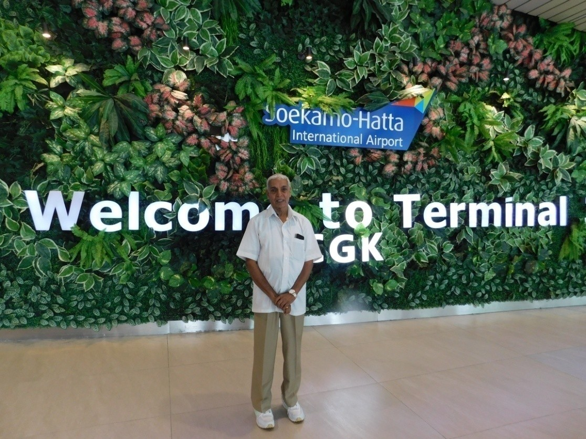
The MH 195 flight was on time. We reached Kuala Lumpur at 7:30 am. After we landed at Kuala Lumpur, we completed the security check and got ready to take the onward flight to Jakarta. From here to Jakarta, the flight duration is about 2 hours.
The Malaysian Airlines flight to Jakarta from Kuala Lumpur departed on time. During travel, they served a vegetarian breakfast: vermicelli upma with dal sambar, sliced fruits, and juice.
The flight landed in Jakarta, the capital city of Indonesia, on time. For Indians, they provide a visa on arrival. Without any tedious procedures, we got the visa. We didn't even stand in the queue; the Kesari rep collected all our passports and got the visa for everyone.
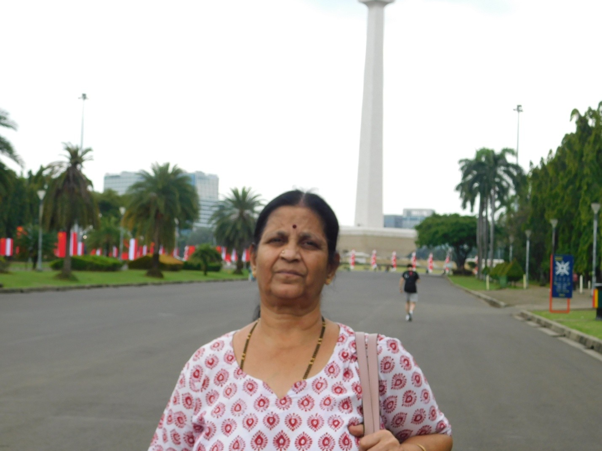
After baggage collection and security checks were over, we proceeded to an Indian Restaurant called Ganesha for lunch. Food was good. Then we went to see the National Monument of Indonesia. Indonesia got freedom from the Dutch, and this monument was constructed to pay respect to the freedom fighters.
A few old buildings which were constructed by the Dutch and used as their offices before Indonesia got freedom are still maintained. That place is called Merdeka Square. After the visit, we reached Hotel Mercure where our accommodation was arranged. The hotel was okay. For dinner, we went to Queens of Tandoori. Food was good.
Eighty percent of the people in this country are Muslims. But in some provinces, the majority of people are Hindus. In Bali, one among the 38 provinces, 80% are Hindus. Even though it is a Muslim-dominated country, the Hindus of this country are respected. In every nook and corner of the city, we can see statues of Hindu Gods.
Indonesia is also not a very safe place for outsiders. Pickpocketing, grabbing mobile phones, and snatching handbags are all common. Today we traveled a lot around Jakarta city by bus. The city is very clean; no garbage heaps on roadsides. But roads are narrow, and buses and cars move at a snail’s speed. We didn’t see much public transport. Most people here use two-wheelers.
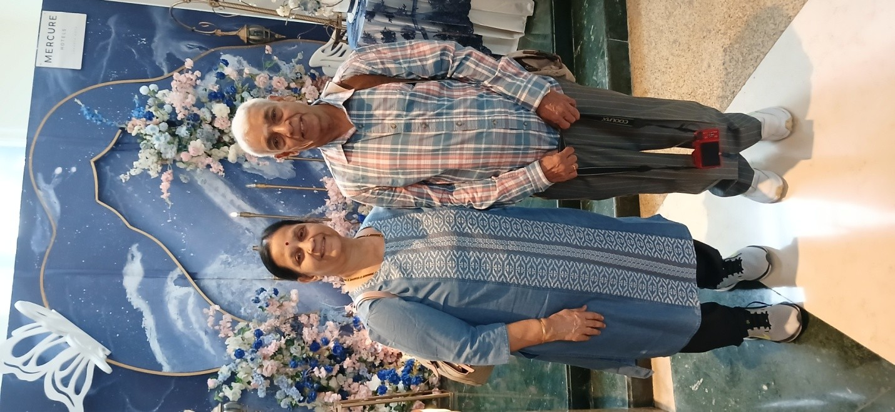
After breakfast, we left from Hotel Mercure and proceeded to Bandung by bus. Bandung is about 150 km away from Jakarta. We left the hotel at 7 am. After we traveled 100 km, we had a break for coffee. After some 15 minutes, we continued our travel.
The climate was too good. It was pretty cool, around 20°C. The bus in which we were traveling had air suspension and the road was good, so bus travel was very comfortable. The highway was excellent; there was no heavy traffic. Both sides of the road have excellent natural scenery. We crossed a few tea estates also. Banana trees and pineapple bushes are abundantly grown. Also, we saw pineapples being sold on the roadsides.
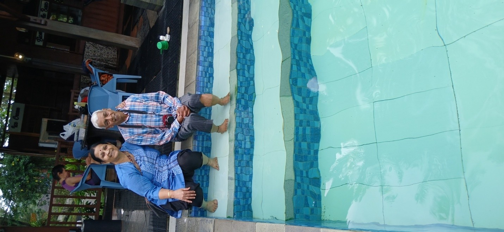
We reached Bandung around 11 am. Our bus was parked in an allocated place and from there we took a minibus to watch Hot Springs. In this place, there are a few active volcanoes and a few springs. This spring water is quite hot. Spring water is collected in pools and people are allowed to swim or stroll in the water. This water is sulfur-contaminated, so pregnant ladies and asthma patients are advised to stay away.
After watching the hot springs, we had our lunch in a local restaurant where Indonesian food was served: garlic bread, plain rice mixed with butter, tomato sauce, fruits, and noodles.
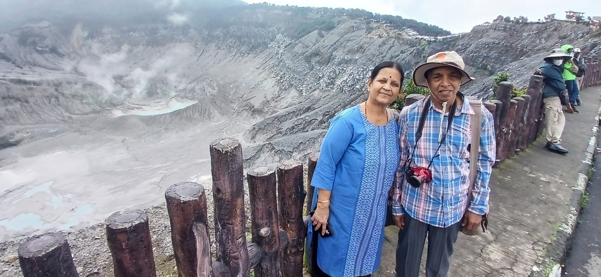
After lunch, we proceeded to Tangkuban to watch the erupted volcano. This place is at an elevated altitude, about 5000 ft above sea level. The weather was very cloudy and most of the time drizzling. We can climb hills around this erupted volcano and take photos. After an hour, we reached Bandung city. Our accommodation was arranged in the Best Western hotel. We had our dinner at an Indonesian hotel called Warung Dulukala. For vegetarians, only sticky rice and boiled vegetables were there.
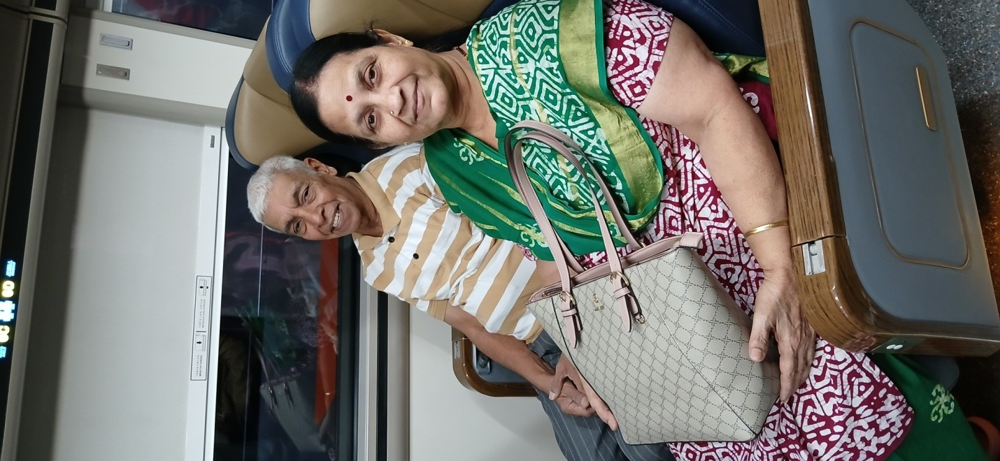
Morning we got up at 4 o'clock. We got ready by 4:45 am and left the Best Western, Bandung and proceeded to the railway station. Our next destination is Yogyakarta. The distance between these two cities is about 500 km. Travel time is about 6 hours. The train route is similar to Kerala, full of paddy fields and banana plants. The train reached Yogyakarta station right on time at 1:15 pm.
Our tour bus was waiting outside. Our accommodation was booked in Hotel Santika. In the evening, we proceeded to Hotel Ganesha, an Indian luxury hotel. The hotel was posh and the food was good.
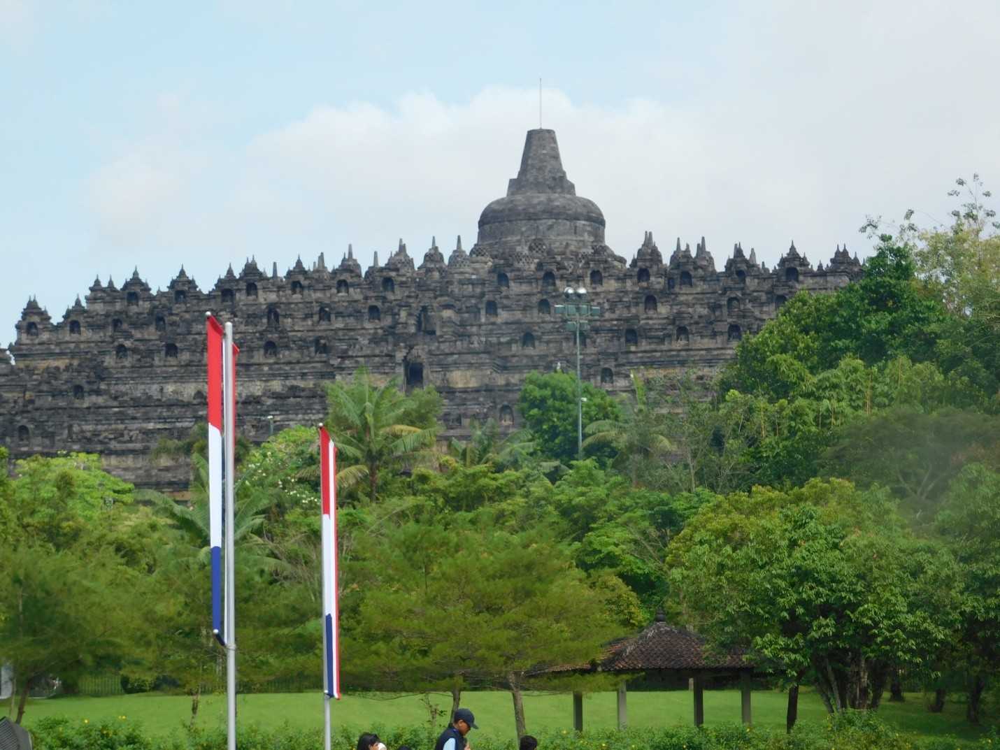
We proceeded to visit Borobudur Temple. It is a Buddhist temple. During the first century, kings of this place adored Hinduism, but during the third century, Buddhism spread from Sri Lanka. Actually, Buddha never came to this country. This temple complex is very vast and beautifully maintained; it is also a UNESCO heritage site.
The original temple was damaged by an earthquake and renovated without altering the original structure. The temple has ten stages and a total of 140 steep steps. Currently, people are only allowed to see up to three stages, requiring us to climb around seventy steps. Along with the entry ticket, they provide new chappals which we must wear to go inside.
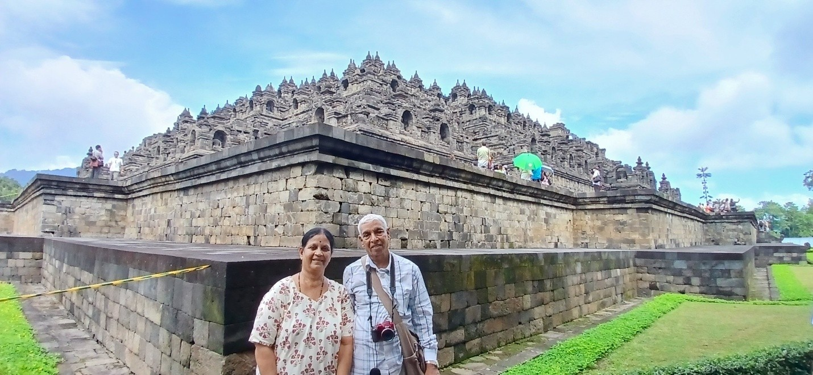
The irony is, such big Buddhist temples are seen in China, Malaysia, Nepal, and Cambodia, but not in India where the religion originated. People believe the strong philosophy of the Geetha and the vocabulary of Hindu saints like Adi Shankaracharya, who preached from Kanyakumari to Srinagar, kept the followers of Hinduism strong in India.
After the Buddhist temple, we had lunch at Ganesha, a posh Indian restaurant, where they served brinjal bharta, chapati, black chana dal, paneer subji, and jeera rice, ending with kulfi. From there, we proceeded to the Prambanan Hindu Temple Complex.
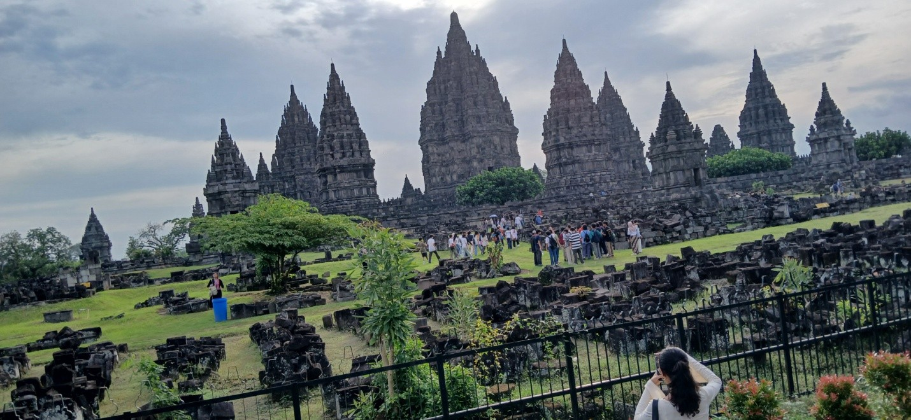
It is a big Hindu temple complex featuring three major temples. The first is dedicated to Lord Brahma, with a small temple for the Swan opposite it. In the middle is a large temple for Lord Shiva, with a small temple for Nandi opposite. On the right extreme is a temple for Lord Vishnu, with a small temple for Garuda opposite.
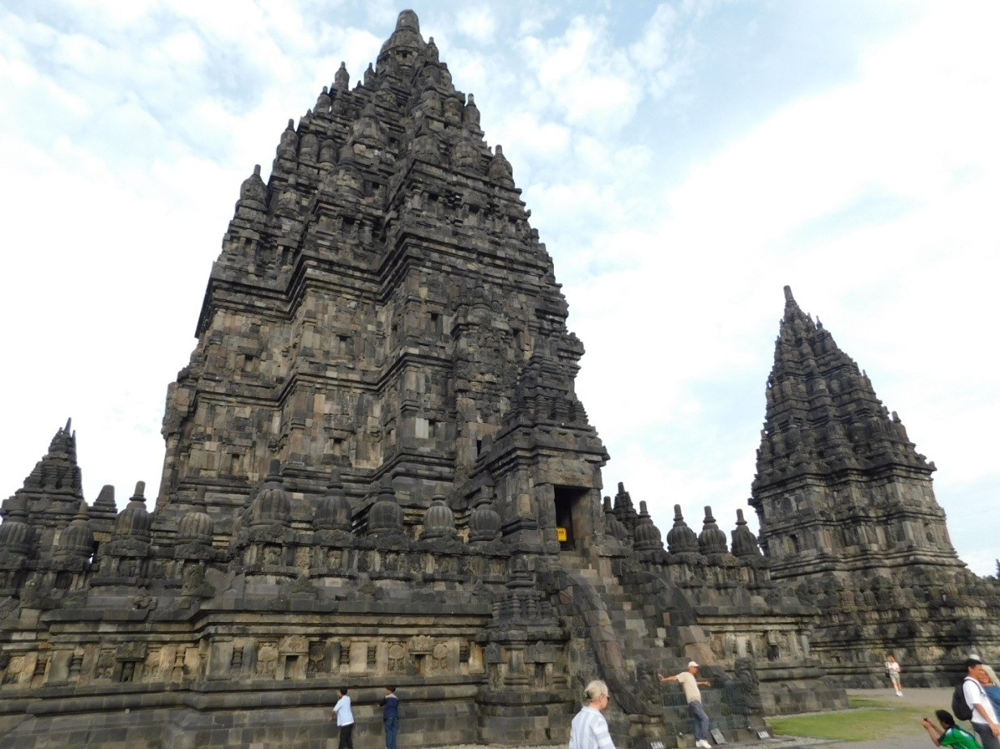
The architecture is quite different, and these temples look marvelous against the greenery and the sky background. We purchased a few fridge magnets of the Prambanan temples. Here, the conversion to Indonesian Rupiah is very funny. 1 US Dollar is equal to 15,800 IDR. The price of one simple roadside T-shirt is 1 lakh IDR, and a cup of coffee is 50,000 IDR!
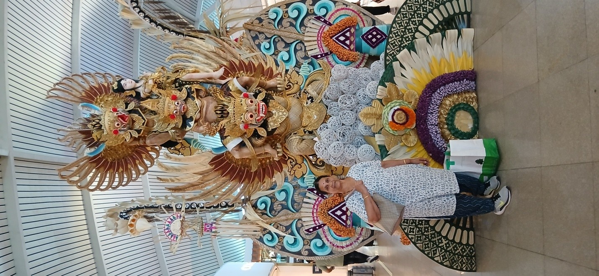
Morning leisurely we got up, since only we had to move to Bali and there was no other schedule. We took breakfast and left for the airport. It was about an hour and 30 minutes travel. Our flight was supposed to depart from Yogyakarta Domestic airport at 2 pm. But it was late by 2 hrs.
The plane landed at Ngurah Rai International Airport, Bali at 8 pm (Bali time). Bali Airport is very beautiful. We had our dinner at Royal Kitchen on the way to our hotel. Our accommodation was arranged at Hotel Harper. Hotel room was ok.
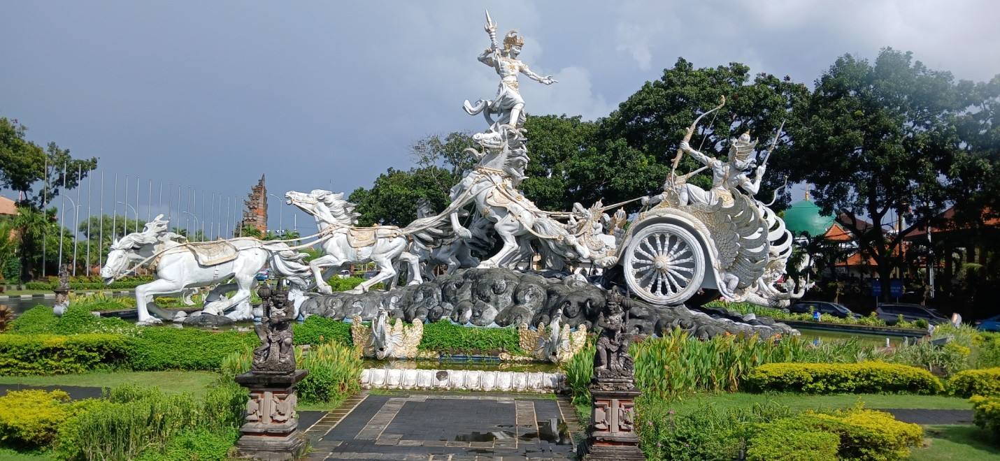
Bali is an island and one among the 38 provinces of Indonesia. Weather is very humid and hot. Roads are very narrow so most of the roads in the city are one way. Bali got only one airport, Ngurah Rai International Airport. We didn't see any multi-storied buildings. Maximum they allow to construct only 4 story buildings. Local Govt is particular that no building should be taller than the temple.
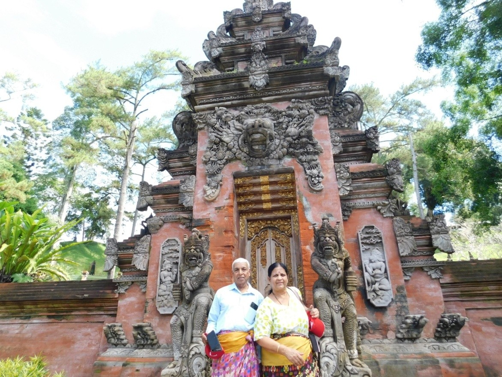
Tirta Empul Temple: This one is one of the famous temples in Bali. Main deity is Brahma. In this temple a pond is there and through springs water is continuously flowing. It is believed that God Indra created this spring and that water cures all sort of illness. Basically people believe and come here who suffer from some kind of illness to have a dip in this sacred pond for getting cured.
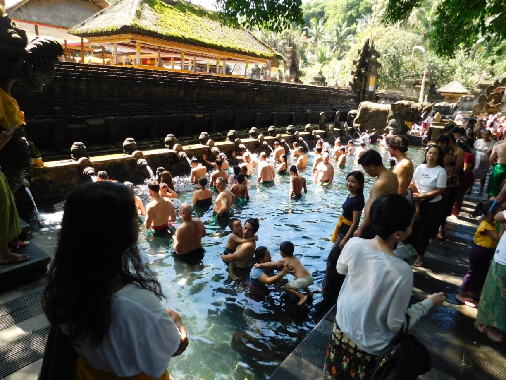
Also main deity is kept in a secluded place, and people are allowed to do pooja and offering sacred food items. All visitors are not allowed to these premises.
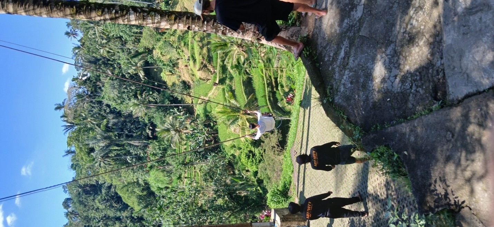
Abuan Desa Rice Terrace, Tegallalang Pakudui: Then we visited here. The main attraction is giant swings (Julias) and zip liner. Big valleys are there. Across the valley this zip liner is arranged.
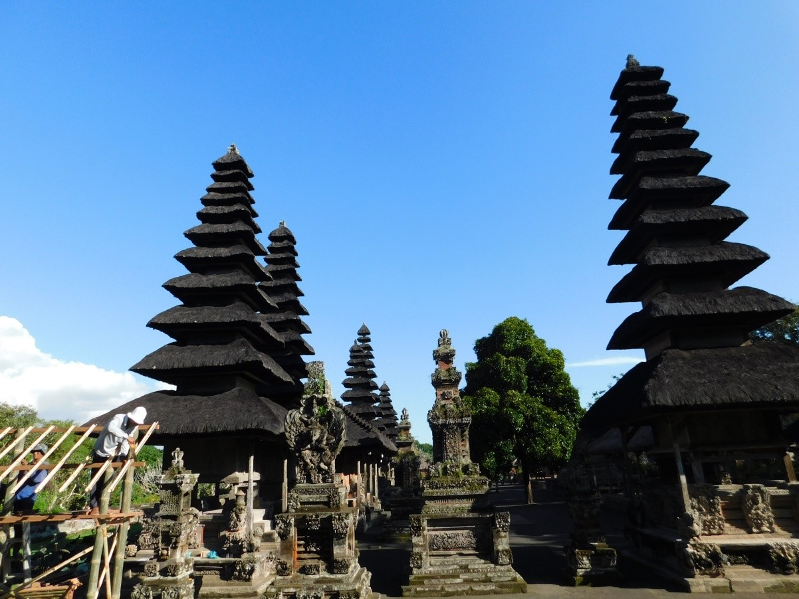
Taman Ayun Temple: It is about 2 hours journey from the main city. This temple was built in 16th century by the king Mengwi to pay respect to his ancestors. It is a kind of family temple. In Bali, every family got a temple called a family temple and every village has a temple called a village temple.
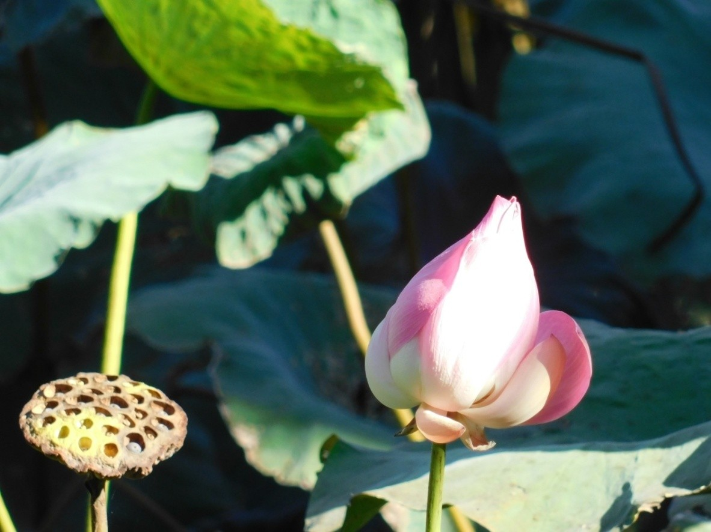
Bali is a small island of length about 150 km and width of 90 km. Within this island thousands of temples are there. Taman Ayun temple got a beautiful lotus pond around the temple. This is not a very big temple, but the natural beauty is superb. This temple faced many times natural calamity and subsequent renovations.
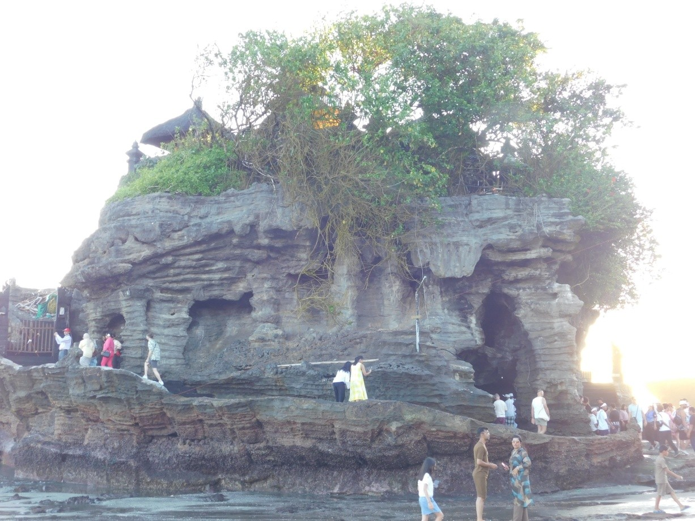
Tanah Lot Temple: This is a temple situated on the sea shore. Only part of the temple is there. This shore is a black soil sea shore. Here also water springs are there and the water is considered as a holy one. A pandit was sprinkling this holy water over the devotees. Also from here we can see the beautiful sunset.
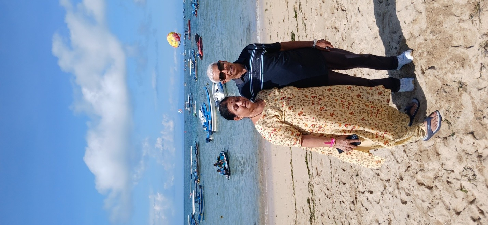
After breakfast we went to Tanjung Benoa Beach. It is a white sand beach. Beach activities like parasailing, banana boat ride, jet ski are available. In our tour package these three rides were included. But we preferred to do only the banana boat ride. That we did and remaining time we were roaming around the beach.
Kesari arranged lunch from Royal Kitchen. They came to the beach and served pani puri, pav bhaji, masala dosa, vegetable biryani and raitha. Also before the lunch they served tender coconut water. This tender coconut was quite big. Around 2 pm we left the beach and after an hour travel, we reached Krishna Mall. It is a big mall mostly selling dresses and souvenirs. Last we went to Royal Orchid massage center. It was an hour session. Whole body massage they do. They are trained professionals. For couples in a room they do. They apply oil on the body and do. After the massage we can take bath. After completion we went to an Indian restaurant and had our dinner.
The last day of the trip. We reached the airport by 10 am. The airport is well decorated with paintings and carvings. Our flight MH 714 reached Kuala Lumpur, and the connecting flight MH 194 reached Mumbai at 10 pm. We reached home after midnight, happy and proud that we reached back safely without any health issues.
| Date | City/Province | Places Visited |
|---|---|---|
| 24/05/2025 | Jakarta | Merdeka Square, National Monument |
| 25/05/2025 | Bandung | Hot Springs, Erupted Volcano |
| 26/05/2025 | Travel | Train travel: Bandung to Yogyakarta |
| 27/05/2025 | Yogyakarta | Borobudur Temple, Prambanan Temple Complex |
| 28/05/2025 | Travel | Flight to Bali |
| 29/05/2025 | Bali | Tirta Empul, Rice Terraces, Taman Ayun, Tanah Lot |
| 30/05/2025 | Bali | Tanjung Benoa Beach, Krishna Mall, Massage Center |
| 31/05/2025 | Travel | Return to Mumbai |